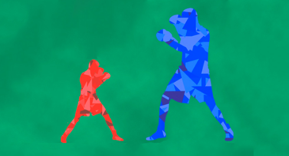
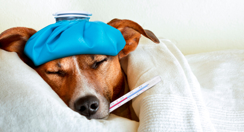

Today is a good day to tell you about a subject that may be not so pleasant, but quite important, as all people involved in fitness or sports face this problem from time to time. I’m talking about injuries and sickness
Injuries
Let’s start from the most important thing – absolutely (!) everyone gets injured. Injuries are the constant companion of strength training (and, indeed, any kind of it). It’s no matter how long you have been training, what your current level is and how attentive and responsible your training approach is (although, this reduces the risk of being injured), anyway you may receive the injury. You just have to accept it.
The №1 Rule
REMEMBER!
We never do something that causes pain. NEVER. You shouldn’t endure pain, you don’t need to do something through pain. If something is beginning to pain, you have to stop doing this IMMEDIATELY.
There are a lot of reasons, why it is not good to train through pain, but personally for me most tangible was the following. Your body doesn’t like, when any of its parts suffer from pain, so if you’ll force it to do exercises that causes pain, it will try to do them in such manner that helps to reduce pain. This means that pain will directly influence your exercises technique, because your body will be trying to change it. Do you know what such subconscious changes of the technique are leading to? To increasing of the risk of getting the additional injures!
If you don’t want to get a serious problems – don’t do anything through pain! I must mention that I’m talking about the ‘bad’ pain (when you have pain in your ligaments/joints, or somewhere else, where you shouldn’t have pain) and not about the ‘good’ pain (when you have pain in your muscles). Although, in the second case, you also need to learn to understand your body and see wherether you can train or not.
After you stopped doing what causes pain, you should analyze your feelings and find the source of this pain, to understand why it appeared and what to do with it. It’s all very simple.
Injuries: big and small ones

There are different kinds of injuries and the most important thing to do when you get one is to understand, how serious is your injure. If the problem is not very serious (e.g. sprain), recovery may take a few days or a week, if it’s something more serious (e.g. dislocation), recovery may take a few weeks, and the more serious is the injury, the more time will take the recovery.
Anyway, there are several main rules that allow you to recover a bit quicker after an injury:
1. Provide enought rest. Do not load the injured part of your body without need.
2. Use anesthetic gels. Actually, injuries in WorkOut is a comparatively rare thing, but as for the most common, those, surely, are sprain and inflammation. Anesthetic gels contain the active component, which helps to remove inflammation. This may not only reduce pain, but sometimes remove its reason. Anyway, it’s very helpful thing, use it, it will do you good.
3. Use wraps. There is such a good thing as wraps. There are wrist, elbow, shoulder, knee wraps etc. Those are destined for giving an additional fixation to a joint, by limiting its mobility and reducing the load on a joint itself as well as on muscles/ligaments surrounding it. Wraps may be useful if you really want to train very much (or it’s strongly needed).
Sickness
Everyone get sick from time to time, so what should you do if you really want to go training, but don't feel well?

Every sickness is a stress for our entire body. Those times it gathers all the resources for solving the problem and escaping these troubles involving minimal harnessing consequences.
But the fact that isn't as obvious to some individuals as it could be is that in that state you MUST NOT train! Your body is already under stress and it spends energy to recover itself. So when you are ill and there's still a decision in your mind to train nevertheless, it's simply as if you are saying your body "yo dude, I don't think there's enough of pressure for you, here, take another portion". You are creating additional stress which is more likely to make the qhole situation worse and not better! Another question - what for are you doing this? For results? There will be no results if you make your condition worse after this one training session and it will take you a month more to recover. Or do you think that your results will be better after a month without training than after a couple of weeks off?
I know at least two more reasons which forces people to start training during sickness.
First reason - addiction to training. We don't want to tell you all that information about endorphines and dophamines and hormones and ect, but when you just in the very beginning of your training way, every training session is a real high for you. And with every sessions a need for this high is created in your body too. So you have to remember that you are going out to workout, not to get high! You are training to get results, not just to enjoy the process. I don't think that your ultimate goal is to train 100 days out of 100 Days WorkOut program. Your goal is to become better, become healthier, stronger and sexier! So remember this - everytime you train during sickness, you make a step in the opposite direction! Think it over.
Second reason - ego. Your ego tells you "man, I gave my word to train, so I have to train no matter what". Sounds familiar, right? But you are falling into the same mind trap once again! Because you are thinking about going to train because you gave your word, not becuase you want to get results! Why? Because results don't come during sickness, so there is no point in training when you are sick!
So, if you are sick, you are sick. No training sessions, no additional stress to your body, only calmness and recovering! By the way, when you will recover and get back on a track, don't forget to start slowly returning to your previous level. But we will cover this topic more in tomorrow's infopost. So that's all for today! Good luck and take care.
Right attitude
Nobody likes getting injured, but if you can’t avoid them, so it all depends on your attitude towards them. I know that such situation can unsettle you, that you don’t want to leave the track and take a break and so on. But...
Firstly, depending on injury, you can modify your workout routine, so that you can keep training without loading your injured body parts. For example, if you sprain you wrist, you may dedicate a few next trainings to the lower body training. If you slipped, fell and knocked your knee, okay, train upper body in the near future. This list can be much longer, as all variants are limited only by your imagination. But the main idea is – let injured parts get enough time to recover!
Secondly, working out is only a part of our life, surely cool and important, but only a part. There is an infinite number of interesting things in the world, which you can do, while you can’t train. Recovery time can be used to do such things that you don’t have time to do due to your very busy schedule (because when you are ill or injured, usually you have a lot of free time). You can master some useful computer program, read an interesting book, learn to play on some musical instrument, think of something, introspect about your past and make plans for the future! There is always a lot of variants, and the only thing you need is to stop thinking that you can’t train now, and start thinking about what you can do now!